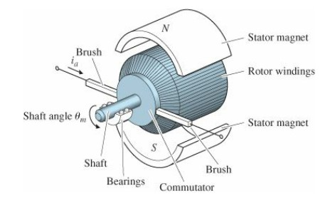
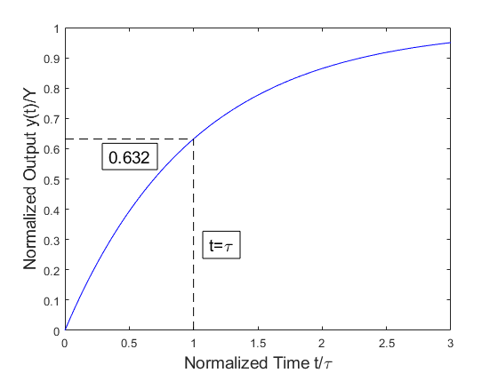
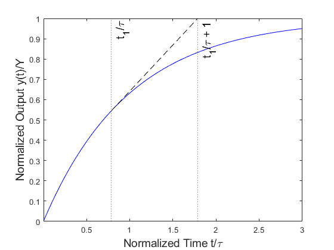
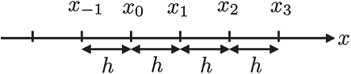
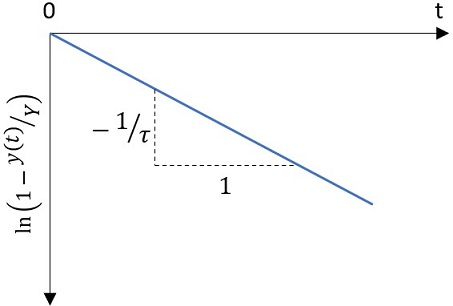
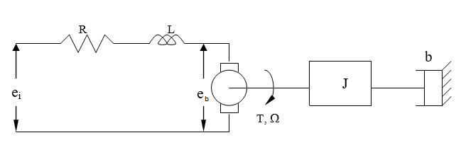

Lab 6 - Background and Resources¶
First Order Systems¶
A first order system is a system whose dynamic response can be described by a first order differential equation. There are countless examples of such systems - RC circuits, interest accumulation, population models, emptying rates of fluid tanks - and all of them can be represented by an equation of the form:
\(\tau\frac{dy}{dt}+y=kF(t)\) \(\quad\) (1)
where \(\tau\) is the time constant which describes the dynamic behavior of the system, \(k\) is the steady-state gain which describes the system’s steady-state behavior in relation to its input, and \(F(t)\) is the forcing function or input disturbance. For a given \(F(t)\), knowledge of \(\tau\) and \(k\) will enable prediction of the system behavior.
DC Motors¶
DC motors are devices which take in a continuous direct current and output rotary motion. Stationary permanent magnets (called stators) surround a coil of wire (called the armature) that is carried by the rotor (the rotating portion of the DC motor) (Figure 1). When a current flows through the armature, a magnetic field is induced according to Ampere’s law. The presence of the magnetic field from the stators causes the rotor to turn in response to the magnetic field induced by the armature. To transfer current to the moving rotor, brushes make electrical contact with a piece of the rotor called the commutator. The commutator is wired to regularly flip the direction of the armature current to enable continuous motion.

Figure 1: Schematic of a DC motor [1]
The response of a DC motor to an applied voltage can be described by a first order system:
\(\tau\frac{d\Omega}{dt}+\Omega=ke_i\) \(\quad\) (2)
where \(\Omega\) is the angular velocity (rad/s) and \(e_i\) is the voltage applied to the armature (V). The time constant \(\tau\) is expressed in seconds, and for the case of a DC motor the steady-state gain \(k\) is expressed in (rad/s)/V.
Measuring Angular Velocity¶
There are several ways to measure the angular velocity of a rotating shaft. Devices for this purpose are called tachometers. Two of the most common send one or more voltage pulses for each revolution of the shaft: optical sensors detect a laser bouncing off a reflective surface, and Hall effect sensors detect a passing magnet. For each of these methods, the pulses must be counted per unit time to obtain a value for RPM or rad/s.
Any DC motor can also be used as a generator. When the shaft is spun by an outside force, the armature wire loop moves in the magnetic field of the stators. By Faraday’s law of induction, this will generate an electromotive force (i.e., voltage). When using a DC motor in this way, the generated voltage will be proportional to the speed of the rotation.
It is therefore possible to use a DC motor as a tachometer, as we will see in this lab. The output sensor voltage \(V_s\) is proportional to the input angular velocity \(\Omega\) by some constant \(c\):
\(\Omega = cV_s\) \(\quad\) (3)
We will use a small DC motor as a tachometer to measure the speed of our motor.
The Time Constant and the Response to a Step Input¶
The time constant \(\tau\) is the main descriptive characteristic of a first order system. It describes the system’s response to a step input: either the rise time in reponse to a positive step, or the decay time in response to a negative step [2].
Consider an arbitrary first order system described by Equation 1. For a step input, the forcing function is:
\(F(t)=Xu(t)\) \(\quad\) (4a)
where \(X\) is a constant and \(u(t)\) is the Heaviside step function given by:
\(u(t) = \left\{ \begin{array}{ll} 0 \quad t \le 0 \\ 1 \quad t > 0 \end{array} \right. \) \(\quad\) (4b)
The response of the system to this input is:
\(y(t) = Y\left ( 1-e^{\frac{-t}{\tau}}\right )\) \(\quad\) (5)
where the steady state response is given by \(Y=kX\). \(k\) is the steady-state gain of the system and \(X\) is the magnitude of the step input.
The time constant \(\tau\) can be extracted in three ways:
1. Inspection¶
Figure 2 displays a normalized plot of the step response for an arbitrary first order system. The point referred to as the “63.2% response point” is marked. This is the point at which \(t/\tau = 1\), i.e. \(t=\tau\). At this point the dynamic response has reached 63.2% of its steady-state value:
\(\frac{y_{t=\tau}}{Y} = 1-e^{-1}=0.632\) \(\quad\) (6)

Figure 2: Step response of a first order system, 63.2% response point
Determining the time at which a system has reached 63.2% of its steady-state response provides a quick estimate of the system’s time constant.
2. The Slope of the Response¶
The time constant of the system can also be identified by calculating the slope of the response, i.e. the derivative of the response with respect to time. Taking the derivative of the response (Equation 5) yields an expression for the slope of the response at any given time:
\(\frac{dy}{dt}=\frac{Y}{\tau}e^{\frac{-t}{\tau}}\) \(\quad\) (7)
This slope can be used to construct a tangent line to the curve at any point in time. As shown in Figure 3, this line will intersect the asymptotic (steady-state) value at \(\tau\) time units after the point at which the tangent line was placed.

Figure 3: The slope of the response, intersection with the steady-state value
To obtain an estimate of the derivative of an experimental data series, finite difference methods are often used. The definition of the derivative of a function \(f(x)\) at point \(a\) is:
\(f'(a)=\lim\limits_{x \to a}\frac{f(x)-f(a)}{x-a}\) \(\quad\) (8a)
If our data consists of discrete points, as all sample data will, the denominator \(x-a\) can only become as small as the sampling period. Figure 4 illustrates the concept - each data point is separated by \(h\).

Figure 4: Data points separated by sampling period h [3]
Conceptually, considering Equation 8a, we could attempt to approximate the derivative at point \(x_j\) by taking the difference between it and its neighbor \(x_{j+1}\):
\(f'(x_j)\approx \frac{f(x_{j+1})-f(x_j)}{h}\) \(\quad\) (8b)
This is called the forward difference approximation. The backward difference uses \(x_{j-1}\) instead, for a slightly different result. However, it can be shown via Taylor series expansion that the central difference method provides a more accurate approximation than the other two [3]:
\(f'(x_j)\approx \frac{f(x_{j+1})-f(x_{j-1})}{2h}\) \(\quad\) (8c)
3. Linear Regression¶
If the experimental data is noisy or scattered, or if the steady-state value is unknown, it will be difficult to identify the 63.2% response point. Taking the derivative of the response is also prone to problems - numerical differentiation is highly sensitive to variations in data. A more rigorous way to determine the time constant is to perform a linear regression on the data. This is accomplished by rearranging Equation 5 as:
\(1-\frac{y(t)}{Y}=e^{\frac{-t}{\tau}}\) \(\quad\) (9)
Taking the natural log of both sides results in an equation that is linear in time:
\(\ln \left [ 1-\frac{y(t)}{Y} \right ] =-\frac{1}{\tau}t\) \(\quad\) (10)
Considering time as the independent variable and the entire left-hand side as the dependent variable, this is a linear relationship that can be used to determine the time constant via linear regression. After the transformation, the data will fall on a straight line (as shown in Figure 5). When the data is treated in this manner, the fitted line is constrained to pass through the origin (since there is only one fitting coefficient) and has a slope equal to the reciprocal of the time constant.

Figure 5: Semi-log plot of the step response
Defining the Electro-mechanical System¶
An armature controlled DC motor is shown schematically in Figure 6. An input voltage, \(e_i\), is provided by an external power supply. The motor possesses an internal resistance, \(R\), and an inductance, \(L\). This inductance is a result of the electromagnetic effect created by the armature windings, and has a negligible effect on the time response in most situations. The shaft of the motor and driven components (a flywheel and tachometer in the present lab) have an inherent rotational inertia, \(J\). The system also experiences viscous damping, characterized by the coefficient \(b\), due to internal and air damping as well as the resistance of the tachometer.

Figure 6: System schematic
A mathematical model of this motor can be developed by considering the electrical and mechanical constituents of the system separately. The following equation describes the armature circuit:
\(e_i = Ri+K_g\Omega\) \(\quad\) (11)
where \(e_i\) is the voltage applied to the armature, \(R\) is the resistance of the windings, \(i\) is the current, \(K_g\) is the motor voltage constant (V/(rad/s)), and \(\Omega\) is the angular velocity of the shaft. The last term in Equation 11 is commonly called the back emf developed within the motor (marked as \(e_b\) in Figure 6) - it is a reverse voltage proportional to the angular speed of the shaft, and is the reason a DC motor can be used as a generator or tachometer.
The output torque \(T\) is proportional to the armature current:
\(T=K_ti\) \(\quad\) (12)
where \(K_t\) is called the motor torque constant and is expressed in (N-m)/A. Equation 12 provides a connection between the mechanical response of the system and the electrical behavior of the motor. In this set-up, the output torque is used to overcome system inertia and frictional drag. If that drag is viscous in nature, the equilibrium equation of the rotor system is:
\(T=J\frac{d\Omega}{dt}+b\Omega\) \(\quad\) (13)
where \(J\) is the inertia of the rotating parts (kg-m^2) and \(b\) is the rotational viscous damping coefficient (N-m/(rad/s)).
The input to this system is the voltage potential \(e_i\) applied to the armature, and the response is the angular velocity \(\Omega\). Equations 11-13 can be combined algebraically (eliminating \(T\) and \(i\)) to produce one differential equation which describes the combined electro-mechanical response of the system:
\(\tau\frac{d\Omega}{dt}+\Omega=ke_i\) \(\quad\) (14a)
where the time constant is given by:
\(\tau=\frac{J}{b+\frac{K_tK_g}{R}}\) \(\quad\) (14b)
and the steady-state gain is:
\(k=\frac{1}{K_g+\frac{bR}{K_t}}\) \(\quad\) (14c)
Determining Motor and System parameters¶
Equations 14a-c desribe the system behavior, but in order to use them it will be necessary to collect sufficient data to determine the system parameters (e.g., \(K_t\), \(b\), etc.). Three tests can be carried out to accomplish this:
1. Blocked Rotor Test¶
Finding \(K_t\)
Note: this test has the potential to damage the motor. We will not be performing it. Instead, the result will be supplied to you in the Procedure section.
If the armature is prevented from rotating and a voltage potential is applied, the output torque is still related to the armature current by Equation 12. The armature current can be varied by introducing additional resistors in series with the winding, and the corresponding motor torque can be measured by an appropriately placed force transducer. The motor torque constant \(K_t\) is obtained by plotting the output torque vs. current data. The slope is \(K_t\).
2. Free Speed Test¶
Finding \(K_g\) and \(b\)
Recall that the steady-state gain constant is simply a ratio of output speed to input voltage:
\(k=\frac{\Omega}{e_i}=\frac{1}{K_g+\frac{bR}{K_t}}\) \(\quad\) (14c)
The steady state speed \(\Omega\) in response to applied voltage can be measured with a tachometer. The internal resistance of the motor (\(R\)) and the applied voltage (\(e_i\)) are known (they can easily be measured with a multimeter). \(K_t\) has been determined by the blocked rotor test. Substituting these values into Equation 14c leaves one equation for two unknowns: \(K_g\) and \(b\).
Notice that the steady-state gain depends on the resistance of the circuitry involved. We can introduce a known resistor in series with our motor to obtain new values for \(R\) and \(\Omega\). Substituting these new values into Equation 14c gives a second equation for the same two unknowns. Solving these two equations produces values for the voltage constant \(K_g\) and the viscous damping coefficient \(b\).
3. Transient Test¶
Finding \(\tau\) and \(J\)
Recording the angular velocity of the motor over time after applying a step input (i.e., applying a voltage to turn on the motor) will produce a data series similar to the one shown in Figures 2 and 3. Each of the three methods mentioned previously will be used to determine the time constant \(\tau\) of the system. Once \(\tau\) is known, the only unknown variable in Equation 14b is the rotational inertia \(J\), which can be found by simply rearranging 14b.
References¶
Franklin, G.F., Powell, D.J., and Emami-Naeini, A. 2001. Feedback Control of Dynamic Systems (4th ed.). Prentice Hall PTR, USA.
Lipták, B.G. 2005. Instrument Engineers’ Handbook, Volume Two: Process Control and Optimization (4th ed.). CRC Press, USA.
Kong, Q., Siauw, T., Bayen, A. 2020. Python Programming and Numerical Methods: A Guide for Scientists and Engineers (1st ed.). Academic Press, USA